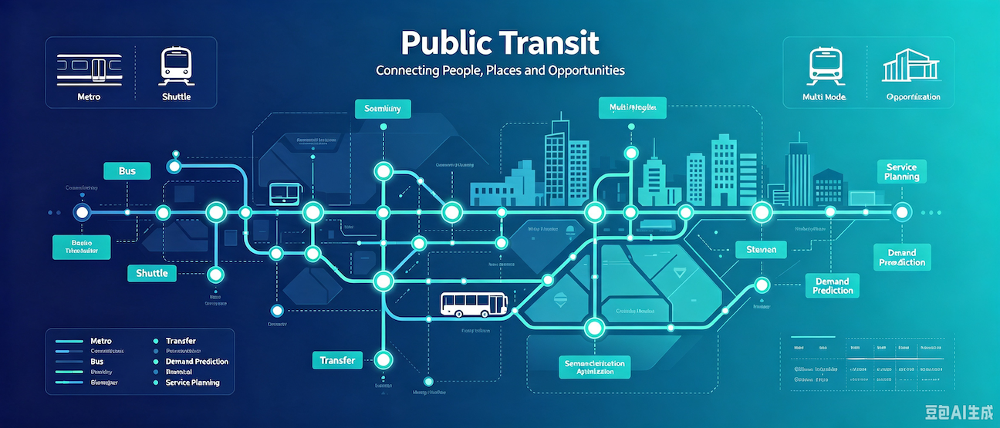
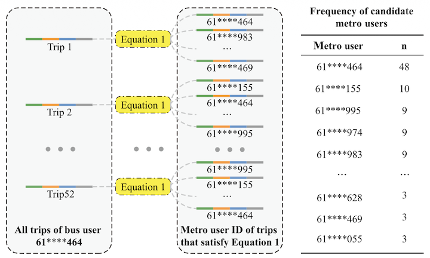
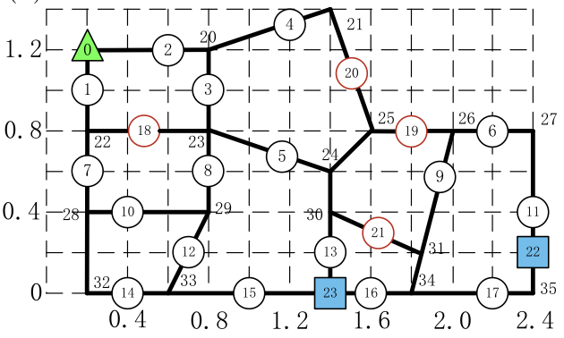
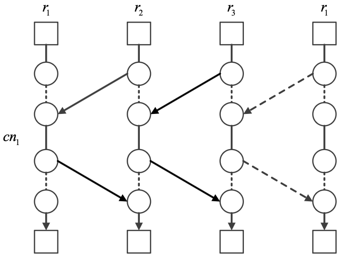
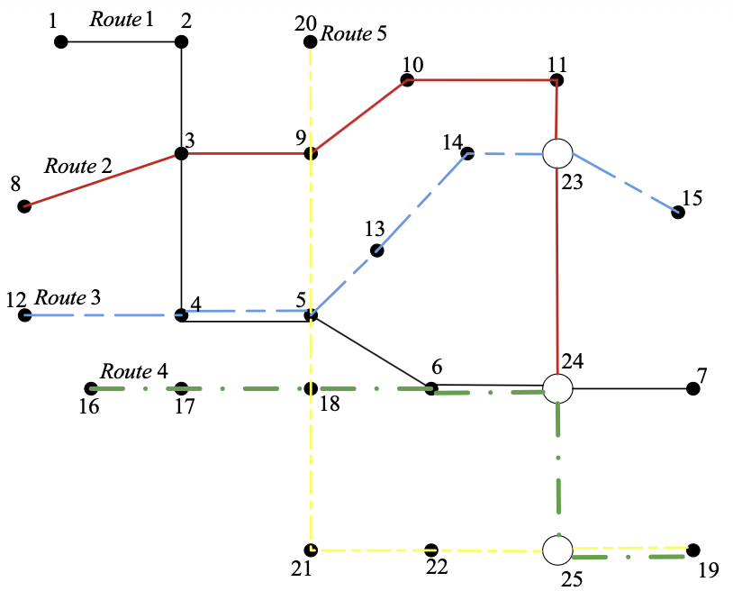

Public Transit: Planning and Operations
Overview
Public transit connects travelers to jobs, services, and urban opportunities through coordinated rail and bus systems. Effective transit depends on understanding passenger demand and multimodal transfers while designing reliable routes, timetables, and demand-responsive services.

Our studies advance public transit through multimodal data integration and community shuttle network design, timetabling, and demand-responsive operations:
- Privacy-preserving anonymization makes it difficult to connect the same traveler across separate modal datasets and reconstruct complete multimodal journeys. We developed TBLink, which formulates cross-mode user identification as a stable matching problem using repeated spatiotemporal transfer signatures in metro and bus data[1].
- Large communities need efficient last-mile links to metro stations, but conventional shuttle layouts often rely on coarse assumptions and subjective design. We formulated a joint route-network and service-frequency optimization model and developed an adaptive-operator-selection genetic algorithm to minimize user and operator costs[2].
- Fixed community shuttle services can provide poor service during nonpeak periods when demand is dispersed and uncertain. We formulated a demand-responsive routing and departure-time optimization model and designed tabu-search and variable-neighborhood-search algorithms to jointly reduce operating and passenger in-vehicle costs[3].
- Community shuttles must synchronize with metro services while respecting vehicle capacity and fleet limits. We formulated a synchronized timetable optimization problem and developed the tailored FW-SDT algorithm, which outperformed a genetic algorithm in accuracy and efficiency[4].
Publications

[1]Identifying Users Transferring Between Transportation Modes: A Stable Matching Approach

[2]Optimal Design of Community Shuttles With an Adaptive-Operator-Selection-Based Genetic Algorithm

[3]Demand Responsive Service-Based Optimization on Flexible Routes and Departure Time of Community Shuttles

[4]Optimal Timetable Development for Community Shuttle Network With Metro Stations